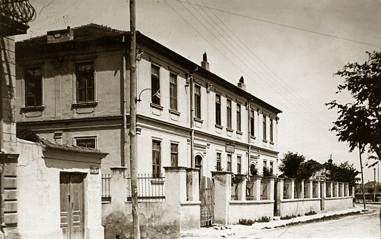
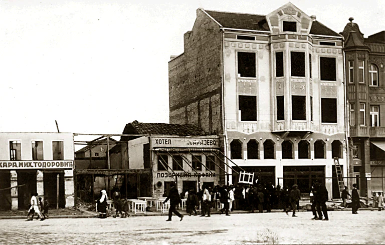
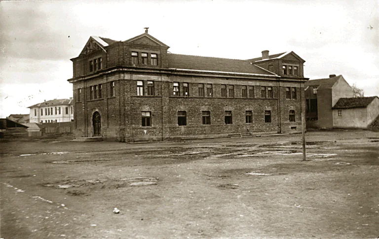
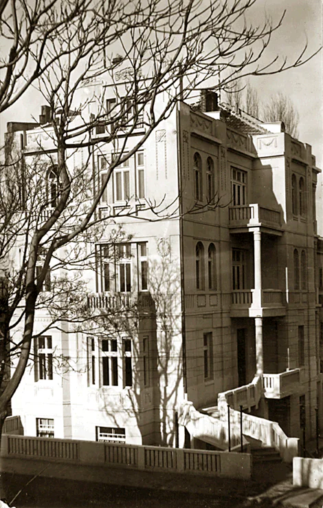
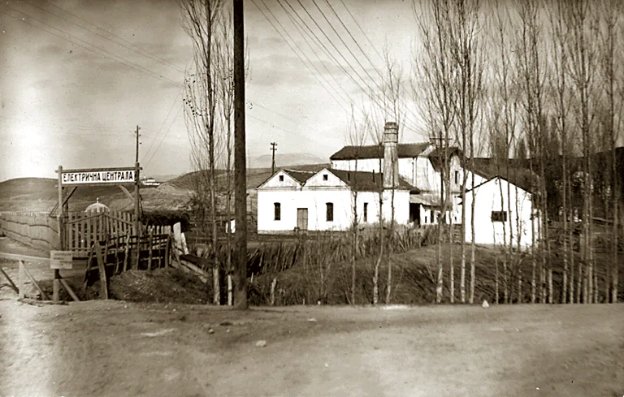
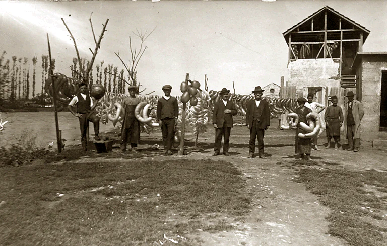
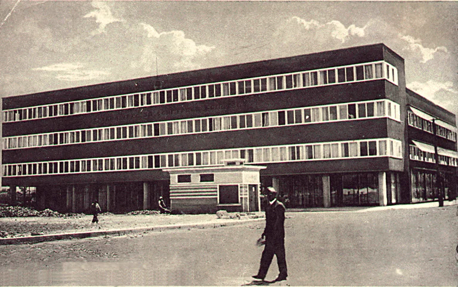

Skopje 1916 - 1917 panorama 1
Documents from the Balkan Wars
- Year
- 1916-1917
- Length
- 00:11

Hotel Turati. Built at the end of the 19th century.

The photograph was taken from the building of the old railway station - today's Museum of the City of Skopje - built in 1873 under the Ottoman Empire. In the foreground is the approach to the station, with fenced green areas. Beyond is the main street leading to the square. At the start of the street on the left is the hotel "Rusija".

View towards the main street "Makedonija". The gate was put up in honour of an important guest. To its left is the hotel "Rusija". - beginning of the 20th century.

The courthouse, the 1920s.

The courthouse, the 1920s.

The building of the Jewish community - the 1920s.

The house of the Serbian sisters - the 1920s.

Skopje after 1930. View of the main street, from today's Museum of the City of Skopje towards the square. The two taller buildings are the Grand Hotel "Bristol" and, to its right, the hotel "Srpski Kralj", with eclectic architectural details.

The hotels Srpski Kralj and Bristol. - the 1920s.

The house of the Čitkušev brothers. - the 1920s

The house of the pharmacist Ristić, popularly called the Ristić Palace. On the left of the photograph is part of the hotel "Bel Orel". (the 1920s)

The Ristić Palace - around 1925.

The Ristić Palace. On the left of the photograph is part of the hotel "Bel Orel". (around 1925)

Hotel "Pariz". The photograph shows the hotel courtyard, with a beer hall and a pastry shop. - the 1920s

Hotel "Moskva" - the 1930s

The Ottoman Bank - around 1910.

The little square, right next to the Stone Bridge, on the left bank of the Vardar. In the foreground is the monument to the fallen in the Balkan Wars, and behind on the right the Ottoman Bank.
- the 1920s

The new hotel "Sarajevo" under construction on the square. To its left is the theatre café, and above it the old hotel "Sarajevo". - the 1920s

The square with the hotel "Sarajevo" and the popular "Marger" café, a favourite place of the people of Skopje. To the left of the hotel "Sarajevo" was the hotel "Obedinuvanje". In the foreground, on the pavement, sits a pretzel seller. (around 1935)

The barracks of the Skopje fortress - Kale. - the 1920s

The prison building in Skopje. It stood right next to the Mustafa Pasha Mosque. - end of the 19th century

The Hükümet (municipality). Next to it is the Turkish post office, and behind it the Mustafa Pasha Mosque. - the 1920s

The Hükümet (municipality). Next to it is the Turkish post office. In the background is the Mustafa Pasha Mosque. - the 1920s

The Hükümet (municipality). Next to it is the Turkish post office, and behind it the Mustafa Pasha Mosque. - the 1920s

The building of the financial inspectorate. Today it houses the Institute for Precious Metals. In the Turkish period it was the "Hükümet" (municipality). - the 1930s

The gymnasium, or Skopje Sokol hall "Sokolana", built in 1936.

The Skopje Sokol hall, built in 1936.

The "Red Crescent" military hospital - end of the 19th century. The building stands out for its academic style with Renaissance and Baroque forms.

The "Red Crescent" military hospital, built at the end of the 19th century, in an academic style with Renaissance and Baroque forms. (the 1920s)

The "Red Crescent" military hospital, built at the end of the 19th century.

The "Red Crescent" military hospital, built at the end of the 19th century.

View of the main street, from today's Museum of the City of Skopje towards the square. The Kranga Palace, with classical and Baroque elements, housed the "Capitol" cinema. In the background of the photograph is the Officers' Club. - the 1930s

The "Vardar" sanatorium - the 1930s

The house of the dentist Dr Ruben, whose surgery was right by the Stone Bridge on the left bank of the Vardar. - the 1930s

Post office building. - the 1930s

The National Bank, built to a design by the architect B. Nestorović: a simplified academic style in the decorative elements, with modernist influences. - the 1930s.

The National Bank at night. In front of it, part of the promenade of the citizens of Skopje, popularly called the "Korzo". - the 1930s.

The National Bank, built to a design by the architect B. Nestorović: a simplified academic style in the decorative elements, with modernist influences. On the right is the Chamber of Commerce (architect M. Zloković) - the 1930s.

The Stone Bridge with the National Bank in the background. - the 1930s

The National Bank, the Officers' Club and part of the Stone Bridge. - the 1930s

The National Bank with the Officers' Club and the Stone Bridge. Photographed from the left bank of the Vardar, from the little square where the horse cabs stood. (the 1930s)
The old girls' gymnasium. - the 1930s

The thermal power plant in Skopje - 1910

Inside the thermal power plant in Skopje - 1910

The pharmaceutical factory. - the 1920s.

The first "Shell" petrol station in Skopje. - 1927

Skopje firefighters training. - the 1930s.

A typical tailor's workshop in the old bazaar - 1920

A stand for carters with horse-drawn carts. - the 1920s

The leather processing factory in Skopje. - the 1920s.
The quarry in Skopje, at Kisela Voda, on the slopes of Vodno. - the 1920s.

The airfield near Skopje - 1933. It was on the site of today's Aerodrom and Jane Sandanski neighbourhoods.

The hippodrome in Skopje. (end of the 1920s)

The "Vardar" cinema - the 1940s. Between the two world wars Skopje had these cinemas: Zrinjski, Apollo (burned down in 1930; the Korzo cinema was built in its place), Balkan, Vardar, Capitol, Urania and Avala.

The monument to the pupils who fell in the First World War - the 1920s.

City pharmacy. - 1932.

The Workers' Insurance Institute (today's City Hospital). - the 1930s

The Assembly of the Republic of Macedonia, the 1940s. In those years it was the regional directorate.

Today's Assembly of the Republic of Macedonia - the years before the earthquake.

Stara - Nova Banja. Part of Skopje on the site of today's "Ss. Cyril and Methodius" University

The building of the Interior Administration, built in the 1950s. Later it housed the faculties of law, economics and philosophy and the rectorate.

The Palace of Justice, just after the earthquake. Next to it on the left is the old "Elen Kapan" mosque.
The electricity company building (1962-1964), right next to the city square.

The City Shopping Centre. Construction officially began on 11 October 1969, and the central part opened on 27 April 1973; since then it has worked as a complex.

City shopping centre (1969 - 1973) with part of the "Woman Fighter" park.

City shopping centre (1969 - 1973) with the landscaped grounds of the "Woman Fighter" park.

Documents from the Balkan Wars
Film Review no. 21
 Aqueduct4 postcards
Aqueduct4 postcards Kale30 postcards
Kale30 postcards Bridges60 postcards
Bridges60 postcards Quay58 postcards
Quay58 postcards Square46 postcards
Square46 postcards Buildings66 postcards
Buildings66 postcards Christian churches19 postcards
Christian churches19 postcards Muslim buildings33 postcards
Muslim buildings33 postcards Officers' Club29 postcards
Officers' Club29 postcards Theatre28 postcards
Theatre28 postcards Railway station13 postcards
Railway station13 postcards Schools36 postcards
Schools36 postcards Parks12 postcards
Parks12 postcards Markets18 postcards
Markets18 postcards Streets38 postcards
Streets38 postcards Panorama I60 postcards
Panorama I60 postcards Panorama II30 postcards
Panorama II30 postcards Collages55 postcards
Collages55 postcards Floods9 postcards
Floods9 postcards Earthquake27 postcards
Earthquake27 postcards Skopje 200026 postcards
Skopje 200026 postcards